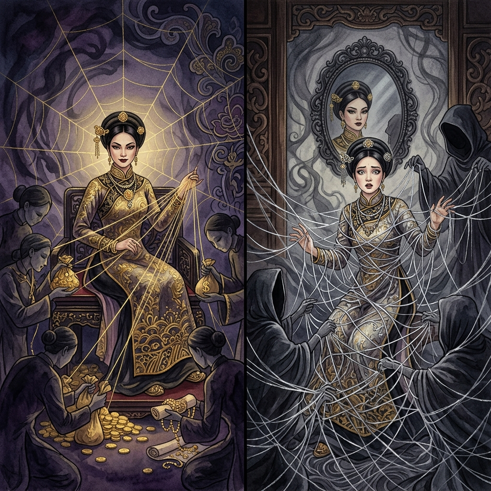
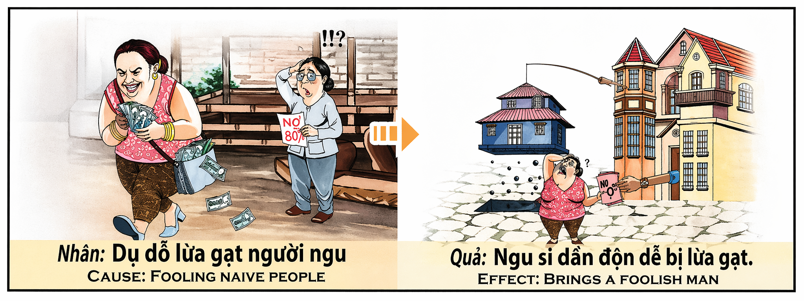

La Telaraña DoradaThe Golden WebLa Ragnatela d'Oro金色蛛网شبكة العنكبوت الذهبيةЗолотая паутинаDas Goldene NetzLa Toile d'Or黄金の蜘蛛の巣A Teia DouradaMạng Nhện Vàng
Quien engaña a los ingenuos — quien teje trampas con palabras dulces para despojar a quien confía — está robándose a sí mismo la inteligencia futura. Porque el karma no olvida las lágrimas del inocente engañado, y devuelve al estafador, en esta vida o en otra, exactamente lo que sembró: una mente incapaz de distinguir la verdad de la mentira, un corazón que firmará cualquier papel sin entenderlo, unos ojos que verán el mundo sin comprenderlo jamás. Whoever deceives the naive — whoever weaves traps with sweet words to strip those who trust — is stealing their own future intelligence. For karma does not forget the tears of the deceived innocent, and returns to the swindler, in this life or another, exactly what was sown: a mind unable to tell truth from lies, a heart that will sign any paper without understanding, eyes that will see the world without ever comprehending it. Chi inganna gli ingenui — chi tesse trappole con parole dolci per spogliare chi si fida — sta rubando a se stesso l'intelligenza futura. Il karma non dimentica le lacrime dell'innocente ingannato e restituisce al truffatore una mente incapace di distinguere il vero dal falso. 欺骗天真者的人——用甜言蜜语编织陷阱掠夺信任者的人——正在偷走自己未来的智慧。业力不会忘记被骗的无辜者的泪水，它会在此生或来世将骗子所播种的一切原封不动地还给他：一个无法分辨真假的头脑，一颗不懂就签字的心。 من يخدع السُّذَّج — من ينسج فخاخاً بكلمات حلوة ليسلب من يثق — يسرق من نفسه ذكاء المستقبل. لأن الكارما لا تنسى دموع البريء المخدوع وتُعيد للمحتال عقلاً عاجزاً عن تمييز الحقيقة من الكذب. Кто обманывает наивных — кто плетёт ловушки сладкими словами, чтобы обобрать доверчивых, — крадёт у самого себя будущий разум. Карма не забывает слёз обманутого невинного и возвращает мошеннику разум, неспособный отличить правду от лжи. Wer Naive betrügt — wer Fallen mit süßen Worten webt, um Vertrauende zu berauben — stiehlt sich selbst die künftige Intelligenz. Das Karma vergisst die Tränen des betrogenen Unschuldigen nicht und gibt dem Betrüger einen Verstand zurück, der Wahrheit nicht von Lüge unterscheiden kann. Qui trompe les naïfs — qui tisse des pièges avec des mots doux pour dépouiller ceux qui font confiance — se vole sa propre intelligence future. Car le karma n'oublie pas les larmes de l'innocent trompé et rend à l'escroc un esprit incapable de distinguer le vrai du faux. 無邪気な人をだます者——信頼する人を甘い言葉の罠で奪う者——は自分自身の未来の知性を盗んでいるのです。カルマは騙された無垢の涙を忘れず、詐欺師に真偽を見分けられない心を返します。 Quem engana os ingénuos — quem tece armadilhas com palavras doces para despojar quem confia — está a roubar a si próprio a inteligência futura. O karma não esquece as lágrimas do inocente enganado e devolve ao burlão uma mente incapaz de distinguir a verdade da mentira. Kẻ lừa người ngây thơ — kẻ giăng bẫy bằng lời ngọt để cướp đoạt niềm tin — đang tự cướp trí tuệ tương lai của chính mình. Nhân quả không quên nước mắt của kẻ ngây thơ bị lừa, và trả lại cho kẻ lừa đảo một trí óc không phân biệt nổi thật giả.
El engaño al inocente es, en la jerarquía del karma, uno de los actos que generan mayor deuda — no porque el daño material sea siempre enorme, sino porque destruye algo que el dinero no puede comprar: la confianza. Cuando una persona ingenua entrega sus ahorros, su firma o su fe a alguien que sabe que la está estafando, se produce una herida doble. La primera es económica y visible. La segunda es invisible y mucho más profunda: la ruptura de la inocencia. El estafador no solo roba dinero; roba la capacidad del otro de volver a confiar en el mundo. Y eso, en la contabilidad kármica, es una deuda impagable.
La simetría del karma es implacable: quien usó la inteligencia para confundir a otros, recibirá una mente confusa. Quien manipuló la ingenuidad ajena, nacerá ingenuo. Quien tendió trampas con papeles que la víctima no podía entender, renacerá firmando contratos que él mismo no entiende. La rueda gira y el engañador se convierte en el engañado — no como castigo, sino como lección: para que aprenda, desde dentro, lo que se siente cuando la única herramienta que tienes para navegar el mundo — tu juicio — falla, y no sabes si la persona que te sonríe te está ayudando o te está destruyendo.
Deceiving the innocent is, in karma's hierarchy, one of the acts that generate the greatest debt — not because the material damage is always enormous, but because it destroys something money cannot buy: trust. When a naive person hands over their savings, their signature, or their faith to someone who knows they are swindling them, a double wound occurs. The first is economic and visible. The second is invisible and far deeper: the shattering of innocence. The swindler doesn't just steal money; they steal another's ability to ever trust the world again. And that, in karma's accounting, is an unpayable debt.
Karma's symmetry is implacable: whoever used intelligence to confuse others will receive a confused mind. Whoever manipulated another's naivety will be born naive. Whoever laid traps with papers the victim couldn't understand will be reborn signing contracts they themselves cannot comprehend. The wheel turns and the deceiver becomes the deceived — not as punishment, but as a lesson: to learn from within what it feels like when the only tool you have to navigate the world — your judgment — fails, and you don't know whether the person smiling at you is helping or destroying you.
L'inganno dell'innocente è, nella gerarchia del karma, uno degli atti che generano il debito maggiore — perché distrugge qualcosa che il denaro non può comprare: la fiducia. Il truffatore non ruba solo denaro; ruba all'altro la capacità di fidarsi ancora del mondo. E questo, nella contabilità karmica, è un debito impagabile.
La simmetria del karma è implacabile: chi usò l'intelligenza per confondere gli altri riceverà una mente confusa. Chi manipolò l'ingenuità altrui nascerà ingenuo. Chi tese trappole con documenti incomprensibili rinascerà firmando contratti che non comprende. La ruota gira e l'ingannatore diventa l'ingannato.
欺骗无辜者在业力等级中是产生最大债务的行为之一——不是因为物质损失总是巨大的，而是因为它摧毁了金钱买不到的东西：信任。骗子不只偷了钱；他偷走了别人再次信任世界的能力。这在业力的账本上是一笔无法偿还的债。
业力的对称是无情的：用智慧迷惑别人的人，将得到混沌的头脑。操纵他人天真的人，将生而天真。用受害者看不懂的文件设陷阱的人，将转世签署自己看不懂的合同。轮回转动，骗子变成了被骗者——不是作为惩罚，而是作为教训。
خداع البريء يُعدّ في سلّم الكارما من الأفعال التي تولّد أعظم الديون — لأنه يدمّر شيئاً لا يُشترى بالمال: الثقة. المحتال لا يسرق المال فحسب بل يسرق قدرة الآخر على الثقة بالعالم مجدداً. وهذا في حسابات الكارما دَين لا يُسدَّد.
تماثل الكارما لا يرحم: من استخدم ذكاءه لإرباك الآخرين سيُمنح عقلاً مُربَكاً. من استغل سذاجة غيره سيُولد ساذجاً. من نصب فخاخاً بأوراق لا تفهمها الضحية سيُبعث يوقّع عقوداً لا يفهمها هو. الدولاب يدور والمخادع يصبح المخدوع.
Обман наивного — это, в иерархии кармы, один из поступков, порождающих наибольший долг — потому что он уничтожает то, что нельзя купить за деньги: доверие. Мошенник крадёт не только деньги; он крадёт у другого способность снова доверять миру. А это в кармическом учёте — непогасимый долг.
Симметрия кармы неумолима: кто использовал ум, чтобы запутать других, получит запутанный разум. Кто манипулировал чужой наивностью — родится наивным. Кто расставлял ловушки бумагами, непонятными жертве, — переродится, подписывая договоры, которых сам не понимает. Колесо вращается, и обманщик становится обманутым.
Den Unschuldigen zu betrügen ist in der Hierarchie des Karmas eine der Handlungen, die die größte Schuld erzeugen — weil sie etwas zerstört, das Geld nicht kaufen kann: Vertrauen. Der Betrüger stiehlt nicht nur Geld; er stiehlt die Fähigkeit des anderen, jemals wieder der Welt zu vertrauen. Und das ist in Karmas Buchhaltung eine unbezahlbare Schuld.
Karmas Symmetrie ist unerbittlich: Wer Intelligenz benutzte, um andere zu verwirren, erhält einen verwirrten Verstand. Wer die Naivität anderer manipulierte, wird naiv geboren. Wer Fallen mit Papieren legte, die das Opfer nicht verstehen konnte, wird wiedergeboren und unterschreibt Verträge, die er selbst nicht versteht. Das Rad dreht sich, und der Betrüger wird zum Betrogenen.
Tromper l'innocent est, dans la hiérarchie du karma, l'un des actes qui génèrent la plus grande dette — car il détruit quelque chose que l'argent ne peut acheter : la confiance. L'escroc ne vole pas seulement de l'argent ; il vole à l'autre la capacité de faire à nouveau confiance au monde. Et cela, dans la comptabilité karmique, est une dette impayable.
La symétrie du karma est implacable : qui utilisa l'intelligence pour embrouiller les autres recevra un esprit embrouillé. Qui manipula la naïveté d'autrui naîtra naïf. Qui tendit des pièges avec des papiers incompréhensibles renaîtra en signant des contrats qu'il ne comprend pas lui-même. La roue tourne et le trompeur devient le trompé.
無邪気な人をだますことは、カルマの序列において最も大きな負債を生む行為の一つです——なぜなら、それはお金では買えないものを破壊するからです：信頼です。詐欺師はお金だけを盗むのではありません。世界を再び信じる能力を他者から奪うのです。これはカルマの会計では返済不能な負債です。
カルマの対称性は容赦ありません：他者を混乱させるために知性を使った者は、混乱した心を受け取ります。他者の無邪気さを操った者は、無邪気に生まれます。被害者が理解できない書類で罠を仕掛けた者は、自分が理解できない契約書にサインして生まれ変わります。車輪は回り、だます者がだまされる者になるのです。
Enganar o inocente é, na hierarquia do karma, um dos atos que geram maior dívida — porque destrói algo que o dinheiro não pode comprar: a confiança. O burlão não rouba apenas dinheiro; rouba ao outro a capacidade de voltar a confiar no mundo. E isso, na contabilidade kármica, é uma dívida impagável.
A simetria do karma é implacável: quem usou a inteligência para confundir os outros receberá uma mente confusa. Quem manipulou a ingenuidade alheia nascerá ingénuo. Quem armou armadilhas com papéis que a vítima não podia entender renascerá assinando contratos que ele próprio não compreende. A roda gira e o enganador torna-se o enganado.
Lừa gạt người ngây thơ là, trong thang bậc nhân quả, một trong những hành vi tạo nợ lớn nhất — vì nó phá huỷ thứ tiền không mua được: niềm tin. Kẻ lừa đảo không chỉ cướp tiền; hắn cướp đi khả năng tin tưởng thế giới của người khác. Đó trong sổ sách nhân quả là món nợ không thể trả.
Sự đối xứng nhân quả thật lạnh lùng: ai dùng trí thông minh để mê hoặc người khác sẽ nhận được trí óc mê muội. Ai lợi dụng sự ngây thơ của người khác sẽ sinh ra ngây thơ. Ai giăng bẫy bằng giấy tờ nạn nhân không hiểu sẽ tái sinh ký giấy tờ mình không hiểu. Bánh xe quay và kẻ lừa trở thành kẻ bị lừa.
La Vendedora de Humo
The Smoke Seller
La Venditrice di Fumo
卖烟的人
بائعة الدخان
Продавщица дыма
Die Rauchverkäuferin
La Vendeuse de Fumée
煙を売る女
A Vendedora de Fumo
Người Bán Khói
En el mercado viejo de Hội An había una mujer que todos llamaban Bà Lụa — la Señora Seda — porque vestía siempre telas finas, llevaba pulseras de oro en cada muñeca y hablaba con una dulzura que derretía la desconfianza como el sol derrite la escarcha. Pero detrás de aquella sonrisa vivía una araña. Bà Lụa vendía terrenos que no existían. Mostraba papeles con sellos que ella misma había falsificado, señalaba parcelas vacías y juraba que en seis meses allí habría una carretera nueva, un hospital, una escuela. "El precio se triplicará", susurraba al oído de quien la escuchaba. "Pero solo si compras hoy."
Sus víctimas eran siempre las mismas: ancianas viudas que guardaban los ahorros de toda una vida bajo la almohada, campesinos que acababan de vender su cosecha, jubilados que no sabían leer la letra pequeña. Personas que confiaban porque no concebían que alguien pudiera mirarles a los ojos y mentirles con tanta convicción. Bà Lụa les hacía firmar contratos de veinte páginas escritos en un lenguaje que ni un abogado hubiera entendido. Y cuando la víctima descubría que el terreno no existía, que los sellos eran falsos, que la carretera era un sueño de humo, Bà Lụa ya había desaparecido. Ya estaba en otra provincia, con otro nombre, con otro traje de seda, sonriendo a otra viuda.
Pasaron los años. Bà Lụa envejeció, pero su astucia no. Un día, sin embargo, comenzó a notar algo extraño: empezó a olvidar cosas. Primero los números. Luego los nombres. Luego las direcciones. A los sesenta años, Bà Lụa — que había redactado contratos capaces de confundir a jueces — no conseguía ya recordar su propio número de teléfono. Los médicos dijeron que era demencia. Pero los ancianos del pueblo dijeron otra cosa: "Es el karma. Ella nubló la mente de otros, y ahora la niebla ha venido a vivir dentro la suya."
Y la ironía más cruel llegó al final. Bà Lụa, que ya no podía administrar su propio dinero, tuvo que confiar en un sobrino que se ofreció a "ayudarla con las cuentas". El sobrino — que había aprendido de la mejor maestra — le hizo firmar unos papeles que ella ya no podía leer. Y en menos de un año, la casa de Bà Lụa, sus joyas, sus cuentas bancarias, todo aquello que había construido robando la confianza ajena, desapareció. El sobrino se mudó a otra ciudad. Bà Lụa terminó sentada en un banco del mercado viejo donde solía cazar a sus víctimas, con la mirada perdida, sin entender cómo había llegado hasta allí. Los vendedores del mercado la miraban pasar y murmuraban entre dientes: "La telaraña dorada. Al final, la araña quedó atrapada en su propia red."
Y una anciana del mercado — una de las pocas que nunca había caído en sus trampas — la vio sentada allí, sola y confundida, y en vez de sentir venganza sintió lástima. Se acercó, le ofreció un vaso de agua y le dijo suavemente: "Bà Lụa, ¿sabes lo que te ha pasado?" Bà Lụa negó con la cabeza, con ojos vacíos. Y la anciana le tomó la mano y le susurró: "Te has pasado la vida robando la claridad a los demás. Y el karma te ha cobrado con la única moneda que tenías: la tuya propia. Porque quien roba mentes, termina perdiendo la suya."
In the old market of Hội An there was a woman everyone called Bà Lụa — Lady Silk — because she always wore fine fabrics, carried gold bracelets on each wrist, and spoke with a sweetness that melted distrust the way the sun melts frost. But behind that smile lived a spider. Bà Lụa sold plots of land that didn't exist. She showed papers with seals she had forged herself, pointed at empty lots and swore that in six months there would be a new road, a hospital, a school. "The price will triple," she whispered to whoever listened. "But only if you buy today."
Her victims were always the same: elderly widows who kept their life savings under the pillow, farmers who had just sold their harvest, retirees who couldn't read the fine print. People who trusted because they couldn't conceive that someone could look them in the eye and lie with such conviction. Bà Lụa had them sign twenty-page contracts written in language not even a lawyer would understand. And when the victim discovered the land didn't exist, that the seals were false, that the road was a dream of smoke, Bà Lụa had already vanished — already in another province, with another name, another silk outfit, smiling at another widow.
The years passed. Bà Lụa grew old, but her cunning did not. One day, however, she began to notice something strange: she started forgetting things. First numbers. Then names. Then addresses. By sixty, Bà Lụa — who had drafted contracts capable of confusing judges — couldn't remember her own phone number. The doctors called it dementia. But the village elders said something else: "It is karma. She clouded the minds of others, and now the fog has come to live inside hers."
And the cruelest irony came at the end. Bà Lụa, who could no longer manage her own money, had to trust a nephew who offered to "help with the accounts." The nephew — who had learned from the best teacher — had her sign papers she could no longer read. Within a year, Bà Lụa's house, jewelry, bank accounts — everything she had built by stealing others' trust — vanished. The nephew moved to another city. Bà Lụa ended up sitting on a bench in the old market where she used to hunt her victims, staring blankly, not understanding how she had gotten there. The market vendors watched her pass and murmured: "The golden web. In the end, the spider got caught in her own net."
And an old woman from the market — one of the few who had never fallen for her traps — saw her sitting there, alone and confused. Instead of feeling revenge, she felt pity. She came over, offered a glass of water, and said softly: "Bà Lụa, do you know what happened to you?" Bà Lụa shook her head with empty eyes. The old woman took her hand and whispered: "You spent your life stealing clarity from others. And karma has charged you with the only currency you had: your own. Because whoever steals minds, ends up losing theirs."
Nel vecchio mercato di Hội An c'era una donna che tutti chiamavano Bà Lụa — la Signora Seta — perché vestiva sempre stoffe pregiate, portava bracciali d'oro a ogni polso e parlava con una dolcezza che scioglieva la diffidenza come il sole scioglie la brina. Ma dietro quel sorriso abitava un ragno. Bà Lụa vendeva terreni inesistenti. Mostrava documenti con timbri falsificati da lei, indicava lotti vuoti e giurava che in sei mesi ci sarebbero stati strada, ospedale, scuola. "Il prezzo triplicherà", sussurrava. "Ma solo se compri oggi."
Le sue vittime erano sempre le stesse: vedove anziane con i risparmi di una vita sotto il materasso, contadini appena rientrati dalla vendita del raccolto, pensionati che non capivano il linguaggio burocratico. Bà Lụa faceva firmare contratti di venti pagine scritti in un gergo incomprensibile. E quando la vittima scopriva l'inganno, lei era già sparita — in un'altra provincia, con un altro nome, un'altra seta, un altro sorriso.
Passarono gli anni. Un giorno cominciò a dimenticare: prima i numeri, poi i nomi, poi gli indirizzi. A sessant'anni non ricordava il proprio telefono. I medici parlarono di demenza. Gli anziani del villaggio dissero altro: "È il karma. Ha annebbiato la mente degli altri, e ora la nebbia è venuta a vivere nella sua."
L'ironia più crudele venne alla fine. Un nipote si offrì di "aiutarla con i conti". Le fece firmare carte che non riusciva più a leggere. In meno di un anno casa, gioielli e risparmi scomparvero. Bà Lụa finì seduta su una panchina del mercato vecchio dove cacciava le vittime, lo sguardo perso, senza capire come ci fosse arrivata.
Una vecchia del mercato — una delle poche mai cadute nelle sue trappole — la vide lì, sola e confusa. Invece di provare vendetta, provò pietà. Le offrì un bicchiere d'acqua e le sussurrò: "Bà Lụa, sai cosa ti è successo? Hai passato la vita rubando la lucidità agli altri. E il karma ti ha fatto pagare con l'unica moneta che avevi: la tua. Perché chi ruba menti, finisce per perdere la propria."
在会安的老市场里，有一个人人都叫她"绸婆"的女人——因为她总是穿着细绸，每只手腕戴着金镯子，说话甜得像蜜，能融化任何人的戒心。但那笑容背后住着一只蜘蛛。绸婆卖的是根本不存在的地皮。她拿出自己伪造的印章文件，指着空地发誓六个月后这里会有新路、新医院、新学校。"价格会翻三倍，"她在人耳边低语。"但必须今天买。"
她的猎物总是同一类人：一辈子积蓄藏在枕头底下的寡妇老太太，刚卖完庄稼的农民，看不懂小字的退休老人。这些人信任她，因为他们无法想象有人能睁着眼睛如此理直气壮地对他们说谎。绸婆让他们签二十页的合同，用连律师都读不懂的语言写成。等受害者发现地皮不存在、印章是假的、公路是烟雾做的梦，绸婆早已消失——换了省份、换了名字、换了丝绸，对着另一个寡妇微笑。
年复一年。绸婆老了，但精明没有。然而有一天，她开始发现异样：她开始忘事。先忘数字，再忘名字，然后忘地址。六十岁时，曾经能起草让法官都糊涂的合同的绸婆，连自己的电话号码都记不住了。医生说是痴呆。但村里的老人说了另一番话："这是业力。她让别人的脑子变糊涂，现在大雾住进了她自己的脑子。"
最残酷的讽刺出现在最后。绸婆无法再管理自己的钱了，不得不信任一个自告奋勇来"帮她理账"的侄子。侄子——有着最好的老师——让她签了她已经读不懂的文件。不到一年，绸婆的房子、珠宝、银行存款——她靠偷别人信任建起的一切——全部消失了。侄子搬去了另一座城市。绸婆最后坐在了老市场的一条长椅上——她曾经在那里猎捕受害者——目光茫然，不明白自己是怎么到这里的。
市场上一位老太太——少数从未上过她当的人之一——看见她独自坐在那里，迷茫困惑。她没有感到复仇的快意，而是怜悯。她走过去，递上一杯水，轻声说："绸婆，你知道你怎么了吗？你花了一辈子偷走别人的清醒。业力用你拥有的唯一货币向你收了账：你自己的清醒。因为偷走别人头脑的人，最终失去自己的。"
في سوق هوي آن القديم كانت هناك امرأة يناديها الجميع بـ"سيدة الحرير" لأنها كانت ترتدي دائماً أقمشة فاخرة وتضع أساور ذهبية على كل معصم وتتحدث بعذوبة تُذيب الحذر كما تُذيب الشمس الصقيع. لكن خلف تلك الابتسامة كان يعيش عنكبوت. كانت تبيع أراضي غير موجودة بأوراق مزوّرة وتَعد بطرق ومستشفيات ومدارس. "السعر سيتضاعف ثلاث مرات"، تهمس. "لكن فقط إذا اشتريتَ اليوم."
ضحاياها كنّ دائماً عجائز أرامل يحفظن مدخرات العمر تحت الوسادة، وفلاحين باعوا محصولهم للتو، ومتقاعدين لا يقرأون الخط الصغير. كانت تُوقّعهم عقوداً من عشرين صفحة بلغة لا يفهمها حتى محامٍ. وحين تكتشف الضحية أن الأرض وهم فقد اختفت سيدة الحرير في مقاطعة أخرى باسم آخر وابتسامة أخرى.
مرّت السنوات. شاخت لكن دهاءها لم يشخ. ثم يوماً بدأت تنسى: الأرقام أولاً ثم الأسماء ثم العناوين. في الستين لم تعد تتذكر رقم هاتفها. قال الأطباء خرف. قال شيوخ القرية شيئاً آخر: "إنها الكارما. أضبّبت عقول الآخرين والآن الضباب جاء ليسكن في عقلها."
وأقسى المفارقات جاءت في النهاية. عرض ابن أخيها "مساعدتها في الحسابات" فوقّعت أوراقاً لم تعد تستطيع قراءتها. في أقل من سنة اختفى بيتها ومجوهراتها وحساباتها. انتهت جالسة على مقعد في السوق الذي كانت تصطاد فيه ضحاياها بنظرة فارغة دون أن تفهم كيف وصلت إلى هناك.
رأتها عجوز من السوق — من القليلات اللواتي لم يقعن في فخها — جالسة وحيدة حائرة. بدل الانتقام شعرت بالشفقة. اقتربت وقدّمت لها كأس ماء وقالت بهدوء: "هل تعرفين ما حدث لك؟ قضيتِ حياتك تسرقين صفاء عقول الآخرين. والكارما حاسبتك بالعملة الوحيدة التي كنت تملكينها: عملتك أنتِ. لأن من يسرق العقول ينتهي بفقدان عقله."
На старом рынке Хойана жила женщина, которую все звали Госпожа Шёлк — потому что она всегда носила тонкие ткани, золотые браслеты на каждом запястье и говорила с такой сладостью, что растапливала недоверие, как солнце — иней. Но за этой улыбкой жил паук. Госпожа Шёлк продавала участки, которых не существовало. Она показывала бумаги с поддельными печатями и клялась, что через полгода здесь будет дорога, больница, школа. «Цена утроится, — шептала она. — Но только если купите сегодня.»
Её жертвами были всегда одни и те же: пожилые вдовы с накоплениями всей жизни под подушкой, крестьяне, только что продавшие урожай, пенсионеры, не умевшие читать мелкий шрифт. Она заставляла подписывать двадцатистраничные договоры на непонятном даже юристу языке. Когда жертва обнаруживала обман, Госпожа Шёлк уже была в другой провинции — с другим именем, другим шёлком, другой улыбкой.
Годы прошли. Однажды она стала замечать странное: начала забывать. Сначала цифры. Потом имена. Потом адреса. К шестидесяти та, что составляла договоры, запутывавшие судей, не могла вспомнить собственный номер телефона. Врачи сказали — деменция. Старожилы сказали иное: «Это карма. Она затуманивала чужие головы, и теперь туман поселился в её собственной.»
А самая жестокая ирония пришла в конце. Племянник вызвался «помочь со счетами». Подсунул бумаги, которых она уже не могла прочесть. За год дом, драгоценности, счета — всё исчезло. Госпожа Шёлк оказалась на скамейке на том самом рынке, где когда-то охотилась, с пустым взглядом, не понимая, как она тут оказалась.
Старуха с рынка — одна из немногих, кто не попался, — увидела её одинокую и потерянную. Вместо мести почувствовала жалость. Поднесла стакан воды и прошептала: «Ты всю жизнь крала у людей ясность ума. А карма взяла плату единственной валютой, которая у тебя была: твоей собственной. Потому что кто крадёт разум — в конце теряет свой.»
Auf dem alten Markt von Hội An gab es eine Frau, die alle Frau Seide nannten — weil sie immer feine Stoffe trug, Goldarmbänder an jedem Handgelenk, und mit einer Süße sprach, die Misstrauen schmolz wie die Sonne den Frost. Aber hinter diesem Lächeln lebte eine Spinne. Frau Seide verkaufte Grundstücke, die nicht existierten. Sie zeigte Papiere mit selbst gefälschten Siegeln und schwor, in sechs Monaten werde es hier Straße, Krankenhaus, Schule geben. „Der Preis wird sich verdreifachen", flüsterte sie. „Aber nur wenn Sie heute kaufen."
Ihre Opfer waren immer dieselben: alte Witwen mit dem Ersparten eines Lebens unter dem Kopfkissen, Bauern nach der Ernte, Rentner, die das Kleingedruckte nicht lesen konnten. Sie ließ zwanzigseitige Verträge in unverständlicher Sprache unterschreiben. Wenn das Opfer den Betrug entdeckte, war Frau Seide längst verschwunden — in einer anderen Provinz, mit anderem Namen, anderer Seide, einem anderen Lächeln.
Die Jahre vergingen. Eines Tages begann sie zu vergessen: erst Zahlen, dann Namen, dann Adressen. Mit sechzig konnte sie ihre eigene Telefonnummer nicht mehr erinnern. Die Ärzte sagten Demenz. Die Dorfältesten sagten etwas anderes: „Es ist das Karma. Sie hat den Verstand anderer vernebelt, und jetzt ist der Nebel in ihren eigenen eingezogen."
Die grausamste Ironie kam am Ende. Ein Neffe bot an, ihr „bei den Finanzen zu helfen". Er ließ sie Papiere unterschreiben, die sie nicht mehr lesen konnte. In weniger als einem Jahr waren Haus, Schmuck, Bankkonten verschwunden. Frau Seide saß auf einer Bank in jenem Markt, wo sie einst jagte — mit leerem Blick, ohne zu verstehen, wie sie dorthin gekommen war.
Eine alte Frau vom Markt — eine der wenigen, die nie in ihre Falle getappt war — sah sie dort sitzen, allein und verwirrt. Statt Rache empfand sie Mitleid. Sie reichte ihr ein Glas Wasser und flüsterte: „Frau Seide, weißt du, was dir passiert ist? Du hast dein Leben damit verbracht, anderen die Klarheit zu stehlen. Und das Karma hat dich mit der einzigen Währung bezahlen lassen, die du hattest: deiner eigenen. Denn wer Verstand stiehlt, verliert am Ende seinen."
Sur le vieux marché de Hội An vivait une femme que tous appelaient Madame Soie — car elle portait toujours des étoffes fines, des bracelets d'or à chaque poignet, et parlait d'une douceur qui fondait la méfiance comme le soleil fond le givre. Mais derrière ce sourire habitait une araignée. Madame Soie vendait des terrains inexistants. Elle montrait des papiers aux cachets falsifiés et jurait que dans six mois il y aurait route, hôpital, école. « Le prix va tripler », murmurait-elle. « Mais seulement si vous achetez aujourd'hui. »
Ses victimes étaient toujours les mêmes : des veuves âgées gardant les économies d'une vie sous l'oreiller, des paysans ayant tout juste vendu leur récolte, des retraités incapables de lire les petits caractères. Elle faisait signer des contrats de vingt pages dans un jargon incompréhensible. Quand la victime découvrait la supercherie, Madame Soie avait déjà disparu — dans une autre province, sous un autre nom, une autre soie, un autre sourire.
Les années passèrent. Un jour, elle commença à oublier : d'abord les chiffres, puis les noms, puis les adresses. À soixante ans, elle ne se souvenait plus de son propre numéro de téléphone. Les médecins parlèrent de démence. Les anciens du village dirent autre chose : « C'est le karma. Elle a embrumé l'esprit des autres, et maintenant le brouillard est venu habiter dans le sien. »
L'ironie la plus cruelle vint à la fin. Un neveu proposa de « l'aider avec les comptes ». Il lui fit signer des papiers qu'elle ne pouvait plus lire. En moins d'un an, maison, bijoux, comptes en banque — tout avait disparu. Madame Soie finit assise sur un banc du vieux marché où elle chassait jadis, le regard perdu.
Une vieille femme du marché — l'une des rares à n'être jamais tombée dans ses pièges — la vit assise là, seule et perdue. Au lieu de la vengeance, elle ressentit de la pitié. Elle lui offrit un verre d'eau et murmura : « Madame Soie, sais-tu ce qui t'est arrivé ? Tu as passé ta vie à voler la clarté d'esprit des autres. Et le karma t'a fait payer avec la seule monnaie que tu avais : la tienne. Car qui vole les esprits finit par perdre le sien. »
ホイアンの古い市場に、皆が「絹婦人」と呼ぶ女がいました——いつも上等な布を身にまとい、両手首に金のブレスレットをつけ、霜を溶かす太陽のように警戒心を溶かす甘さで話したからです。しかしあの微笑みの裏には蜘蛛が住んでいました。絹婦人は存在しない土地を売っていたのです。自分で偽造した印章の書類を見せ、空き地を指さして、半年後にはここに道路、病院、学校ができると誓いました。「価格は三倍になります」と彼女は耳元でささやきました。「でも今日買った場合だけです。」
被害者はいつも同じ人たちでした：枕の下に一生の貯金を隠している高齢の未亡人、収穫を売ったばかりの農民、細かい字が読めない年金生活者。弁護士でも理解できない言葉で書かれた二十ページの契約書にサインさせました。被害者が騙されたと気づく頃には、絹婦人は消えていました——別の省で、別の名前で、別の絹で、別の未亡人に微笑んでいました。
年月が流れました。ある日、奇妙なことに気づきました：物忘れが始まったのです。最初は数字。次に名前。それから住所。六十歳で、かつて裁判官をも混乱させる契約書を起草した絹婦人は、自分の電話番号すら思い出せなくなりました。医者は認知症と言いました。村の長老は別のことを言いました。「カルマだ。彼女は他人の頭を曇らせた。今、霧が彼女自身の頭に住みついたのだ。」
最も残酷な皮肉は最後に来ました。甥が「会計を手伝う」と申し出ました。もう読めない書類にサインさせました。一年も経たないうちに、家も宝石も銀行口座も——他人の信頼を盗んで築いたすべて——消えていました。絹婦人は、かつて獲物を狩った古い市場のベンチに座っていました。うつろな目で、どうしてここに来たのかわからないまま。
市場の老婆——彼女の罠に一度もかからなかった数少ない一人——が、彼女が一人で座っているのを見ました。復讐ではなく、哀れみを感じました。近づいて水を差し出し、そっと言いました。「絹婦人、何が起きたかわかる？あなたは一生、人の明晰さを盗んで暮らした。カルマはあなたが持っていた唯一の通貨で請求したの：あなた自身の明晰さを。人の心を盗む者は、最後に自分の心を失うのだから。」
No velho mercado de Hội An havia uma mulher a quem todos chamavam Senhora Seda — porque vestia sempre tecidos finos, levava pulseiras de ouro em cada pulso e falava com uma doçura que derretia a desconfiança como o sol derrete a geada. Mas por trás daquele sorriso vivia uma aranha. A Senhora Seda vendia terrenos que não existiam. Mostrava papéis com carimbos que ela própria falsificara e jurava que em seis meses haveria estrada, hospital, escola. "O preço vai triplicar", sussurrava. "Mas só se comprar hoje."
As suas vítimas eram sempre as mesmas: viúvas idosas com as poupanças debaixo da almofada, camponeses que tinham acabado de vender a colheita, reformados que não sabiam ler as letras pequenas. Fazia-os assinar contratos de vinte páginas em linguagem incompreensível. Quando a vítima descobria a fraude, a Senhora Seda já tinha desaparecido — noutra província, com outro nome, outra seda, outro sorriso.
Passaram-se os anos. Um dia começou a esquecer: primeiro os números, depois os nomes, depois as moradas. Aos sessenta não se lembrava do próprio número de telefone. Os médicos disseram demência. Os anciãos da aldeia disseram outra coisa: "É o karma. Ela enevoou a mente dos outros e agora o nevoeiro veio morar na dela."
A ironia mais cruel veio no final. Um sobrinho ofereceu-se para "ajudar com as contas". Fê-la assinar papéis que já não conseguia ler. Em menos de um ano, casa, jóias, contas bancárias — tudo o que construíra roubando a confiança alheia — desapareceu. A Senhora Seda acabou sentada num banco do velho mercado onde caçava as suas vítimas, com o olhar perdido.
Uma velha do mercado — das poucas que nunca caíra nas suas armadilhas — viu-a ali sentada, sozinha e confusa. Em vez de vingança, sentiu pena. Aproximou-se, ofereceu-lhe um copo de água e sussurrou: "Senhora Seda, sabe o que lhe aconteceu? Passou a vida a roubar a lucidez aos outros. E o karma cobrou-lhe com a única moeda que tinha: a sua própria. Porque quem rouba mentes acaba por perder a sua."
Ở chợ cũ Hội An có một người đàn bà ai cũng gọi là Bà Lụa — vì bà luôn mặc lụa đẹp, đeo vòng vàng ở cả hai cổ tay, và nói ngọt đến mức tan hết mọi nghi ngờ như nắng tan sương. Nhưng sau nụ cười đó là một con nhện. Bà Lụa bán đất không có thật. Bà đưa giấy tờ có con dấu tự làm giả, chỉ vào bãi đất trống và thề rằng sáu tháng nữa sẽ có đường, bệnh viện, trường học. "Giá sẽ tăng gấp ba", bà thì thầm. "Nhưng chỉ nếu mua hôm nay."
Nạn nhân của bà luôn là những người giống nhau: bà lão goá cất tiền dưới gối cả đời, nông dân vừa bán mùa xong, người về hưu không đọc nổi chữ nhỏ. Bà cho ký hợp đồng hai mươi trang viết bằng ngôn ngữ mà luật sư cũng không hiểu. Khi nạn nhân phát hiện đất không có, dấu giả, đường là giấc mơ khói, thì Bà Lụa đã biến mất — tỉnh khác, tên khác, lụa khác, nụ cười khác.
Năm tháng trôi qua. Một ngày bà bắt đầu quên: đầu tiên là số, rồi tên, rồi địa chỉ. Sáu mươi tuổi, người từng soạn hợp đồng làm quan toà cũng rối, không còn nhớ nổi số điện thoại của mình. Bác sĩ nói sa sút trí tuệ. Các bô lão nói khác: "Đó là nhân quả. Bà ấy làm mờ trí người khác, giờ sương mù đến sống trong trí bà ấy."
Nghịch lý tàn nhẫn nhất đến cuối cùng. Một đứa cháu xin "giúp bà quản tiền". Nó cho bà ký giấy tờ bà không còn đọc nổi. Không đầy một năm, nhà, vàng, tài khoản — tất cả những gì bà xây bằng niềm tin cướp được — biến mất. Bà Lụa ngồi trên ghế đá ở chợ cũ nơi bà từng săn mồi, mắt xa xăm, không hiểu sao mình ở đây.
Một bà lão ở chợ — một trong số ít chưa bao giờ mắc bẫy — thấy bà ngồi đó một mình, mê mờ. Thay vì trả thù, bà thấy thương. Bà lại gần, đưa ly nước và nói nhẹ: "Bà Lụa ơi, bà có biết chuyện gì xảy ra không? Bà dành cả đời cướp sự sáng suốt của người khác. Và nhân quả đã thu bà bằng đồng tiền duy nhất bà có: chính sự sáng suốt của bà. Vì ai cướp trí người, rốt cuộc mất trí mình."

La Inspiración Original
The Original Inspiration
Nguồn cảm hứng ban đầu
La historia que hemos relatado en este capítulo está inspirada por el pasaje de la escena original de los murales «Tranh Nhân Quả» (Ilustraciones del Karma) del Templo Linh Ung en Da Nang.
The story we have told in this chapter is inspired by the passage from the original scene of the "Tranh Nhân Quả" (Illustrations of Karma) murals of the Linh Ung Temple in Da Nang.

🇻🇳 Tiếng Việt:
Nhân: Dụ dỗ lừa gạt người ngu.
Quả: Ngu si dần độn dễ bị lừa gạt.
🇬🇧 English:
Cause: Fooling naive people.
Effect: Brings a foolish man.
Traducción Recreada:
Causa: Seducir y engañar a personas ingenuas.
Efecto: Renacer tonto, crédulo y fácilmente engañable.
Recreated Translation:
Cause: Seducing and deceiving naive people.
Effect: Being reborn foolish, gullible, and easily deceived.
Traduzione ricreata:
Causa: Sedurre e ingannare persone ingenue.
Effetto: Rinascere sciocchi, creduloni e facilmente ingannabili.
重新创建的翻译:
原因：引诱欺骗天真的人。
影响：转世为愚蠢、轻信、容易被骗的人。
الترجمة المعاد صياغتها:
السبب: إغواء وخداع الأشخاص السُّذَّج.
الأثر: الولادة ساذجاً أحمق سهل الخداع.
Воссозданный перевод:
Причина: Обольщение и обман наивных людей.
Следствие: Перерождение глупым, доверчивым и легко обманываемым.
Neu erstellte Übersetzung:
Ursache: Naive Menschen verführen und betrügen.
Wirkung: Als leichtgläubiger, leicht zu betrügender Mensch wiedergeboren werden.
Traduction recréée:
Cause : Séduire et tromper des personnes naïves.
Effet : Renaître sot, crédule et facilement dupé.
再作成された翻訳:
原因：無邪気な人を誘惑しだます。
影響：愚かで騙されやすい人として生まれ変わる。
Tradução recriada:
Causa: Seduzir e enganar pessoas ingénuas.
Efeito: Renascer tolo, crédulo e facilmente enganável.